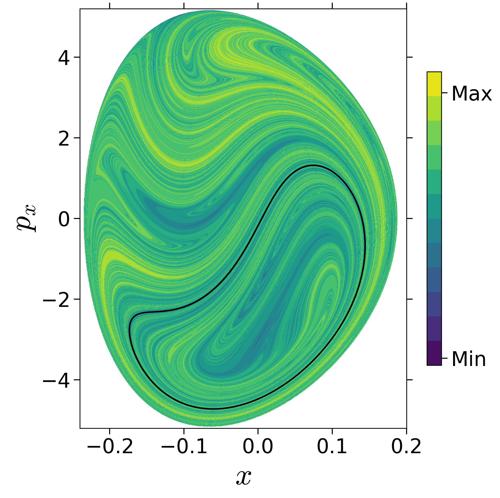
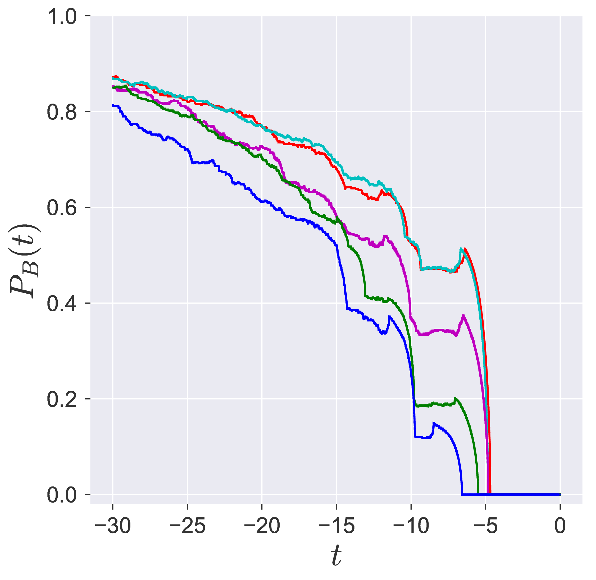

---
redirect_from:
  - "/act2/deleon-berne/deleon-berne"
title: |-
  De Leon Model
pagenum: 17
prev_page:
  url: /act2/caldera/caldera-1-jekyll.html
next_page:
  url: /act2/system_bath1/system_bath1.html
suffix: .md
search: x y mathbf t lambda aligned width figures rm energy bar png partial mathcal delta periodic begin frac end eqn e v yw eq orbit subfigure includegraphics textwidth unstable zeta equilibrium h pxtau py point px figc reference exp fig correction db initial backwardlagdescdeleonbernee phi forwardlagdescdeleonbernee q u label dx manifolds epsilon p where ddagger overline small guess g stable saddle s using procedure epsilons total numerical transition right dot pm mu trajectories differential hamiltonian given potential left sqrt denote omega reactive islands condition figa b isomerization type vector c d reaction matrix ms obtained section space orbits manifold order
biblio-style: apalike
bibliography: system_bath_ld_reactdyn.bib
link-citations: yes
output:
  html_document:
    toc: yes
comment: "***PROGRAMMATICALLY GENERATED, DO NOT EDIT. SEE ORIGINAL FILES IN /content***"
---

    <main class="jupyter-page">
    <div id="page-info"><div id="page-title">De Leon Model</div>
</div>
    <div class="jb_cell">

<div class="cell border-box-sizing text_cell rendered"><div class="inner_cell">
<div class="text_cell_render border-box-sizing rendered_html">
<h1 id="Two-Degree-of-freedom-de-Leon-Berne-Model">Two Degree-of-freedom de Leon-Berne Model<a class="anchor-link" href="#Two-Degree-of-freedom-de-Leon-Berne-Model"> </a></h1><h2 id="Introduction">Introduction<a class="anchor-link" href="#Introduction"> </a></h2><h2 id="Development-of-the-Problem">Development of the Problem<a class="anchor-link" href="#Development-of-the-Problem"> </a></h2><p>We will consider the two degrees-of-freedom Hamiltonian for a
unimolecular conformational isomerization introduced and studied
extensively by De Leon and
co-authors [@de_leon_intramolecular_1981; @de_leon_order_1989; @Almeida1990; @de_leon_1991; @de_leon_1992].
This 2 degrees-of-freedom Hamiltonian is given by $$\begin{aligned}
\mathcal{H}(x,y,p_x,p_y) =&amp; T(p_x, p_y) + V_{\rm DB}(x,y)  \\
=&amp; \frac{p_x^2}{2m_s} + \frac{p_y^2}{2m_s} + V_{\rm DB}(x,y)
\end{aligned}
\label{eqn:ham_db}$$ where the potential energy function
$V_{\rm DB}(x,y)$ is (a detailed description is in the
Appendix: <a href="#appsect:dbpot">[appsect:dbpot]</a>{reference-type="ref"
reference="appsect:dbpot"})
$$V_{\rm DB}(x,y) = D_x\left[ 1 - \exp(-\lambda x) \right]^2 + \dfrac{\mathcal{V}^{\ddagger}}{y_w^4}y^2(y^2 - 
2y_w^2)\exp(-\zeta \lambda x) + \epsilon_s   
\label{eqn:sys_pot}$$</p>
<p>and we will focus on varying $\lambda$ and $\zeta$.</p>
<p>The underlying Hamiltonian vector field is given by $$\begin{aligned}
\dot{x} = \frac{\partial \mathcal{H}}{\partial p_x} &amp;= \frac{p_x}{m_s} \\
\dot{y} = \frac{\partial \mathcal{H}}{\partial p_y} &amp;=  \frac{p_y}{m_s}  \\
\dot{p_x} = - \frac{\partial \mathcal{H}}{\partial x}  &amp;= 2 D_x \lambda \exp(-\lambda x) 
(\exp(-\lambda x) - 1) + \\ &amp; \qquad \dfrac{\mathcal{V}^{\ddagger}}{y_w^4}\zeta 
\lambda y^2(y^2 - 2y_w^2)\exp(-\zeta \lambda x)\\
\dot{p_y} = -\frac{\partial \mathcal{H}}{\partial y} &amp;=  -4 
\dfrac{\mathcal{V}^{\ddagger}}{y_w^4}y(y^2 - y_w^2)\exp(- \zeta \lambda x)
\end{aligned}
\label{eqn:vec_field_db}$$</p>
<p>The total energy will be denoted by
$\mathcal{H}(x,y,p_x,p_y) = E = E_{\rm saddle} + \Delta E$ where
$\Delta E$ is the excess energy above the isomerization barrier energy.</p>
<p>The equilibrium points are located at $\overline{q}_s = (0,0,0,0)$ and
at $\overline{q}_c =(x_{eq},\pm y_w,0,0)$ where the $x$-coordinate,
$x_{eq}$, needs to be obtained using numerical root solver.</p>
<p>The total energy of the equilibrium point $\overline{q}_s$ is
$\mathcal{H}(\overline{q}_s) = \epsilon_s$ for all parameter values, and
will be referred to as the <em>critical energy</em>. The total energy of the
equilibrium point $\overline{q}_c$ is given by</p>
$$\mathcal{H}(\overline{q}_c) = D_x(1 - \exp(-\lambda x_{eq}))^2 - \mathcal{V}^{\ddagger} \exp(-\zeta \lambda x_{eq}) + \epsilon_s$$<p>When $\zeta = 0$, the equilibrium point $\overline{q}_c$ is at
$(0,\pm y_w,0,0)$, and has total energy
$\epsilon_s - \mathcal{V}^{\ddagger}$ (see Supplemental material for
details).</p>
<p>Potential energy function</p>
$$V_{\rm DB}(x,y) = D_x\left[ 1 - \exp(-\lambda x) \right]^2 + \dfrac{\mathcal{V}^{\ddagger}}{y_w^4}y^2(y^2 - 
2y_w^2)\exp(-\zeta \lambda x) + \epsilon_s$$<p>In this study, we fix $\mu = 8, D_x = 10, y_w = 1/\sqrt{2}, 
\mathcal{V}^{\ddagger} = 1, \epsilon_s = 1$, and vary the parameters
$\zeta, \lambda$.</p>
<p>The equilibrium point is at $(0,0,0,0)$ for all parameter values and the
two equilibrium points are at $(x_{\rm eq},\pm y_w,0,0)$ which needs to
be calculated using a numerical root solver and depends on $D_x, 
y_w, \mathcal{V}^{\ddagger}, \zeta, \lambda$. The equilibrium point at
$(0,0,0,0)$ has energy $E(0,0,0,0) = 
\epsilon_s$. While the equilibrium point at $(x_{\rm eq},\pm y_w,0,0)$
has total energy</p>
<p>The total energy of the equilibrium points at $(x_{\rm eq},\pm y_w,0,0)$
is $$\begin{aligned}
\mathcal{H}(x_{\rm eq},\pm y_w,0,0) =&amp; E(x_{\rm eq},\pm y_w,0,0) = V_{DB}(x_{\rm eq},\pm y_w,0,0) \notag \\ 
= &amp; D_x[ 1 - \exp(-\lambda 
x_{\rm eq}) ]^2 - \mathcal{V}^{\ddagger}\exp(-\zeta \lambda x_{\rm eq}) + \epsilon_s \label{eqn:te_bottom_eqpt}\end{aligned}$$</p>
<p>\centering
\subfigure[]{\includegraphics[width=0.32\textwidth]{./figures/pe_contour_param_fig3-A1}}
\subfigure[]{\includegraphics[width=0.31\textwidth]{./figures/pe_contour_param_fig3-A2}}
\</p>
<p>[[fig:pecontours_fig3db1981]]{#fig:pecontours_fig3db1981
label="fig:pecontours_fig3db1981"}</p>
<p><strong>REPEATED SECTION</strong></p>
<h3 id="Two-DoF-de-Leon-Berne-system">Two DoF de Leon-Berne system<a class="anchor-link" href="#Two-DoF-de-Leon-Berne-system"> </a></h3><p>We will consider the two degrees-of-freedom Hamiltonian for a
unimolecular conformational isomerization introduced and studied
extensively by De Leon and
co-authors [@de_leon_intramolecular_1981; @de_leon_order_1989; @Almeida1990; @de_leon_1991; @de_leon_1992].
This 2 degrees-of-freedom Hamiltonian is given by $$\begin{aligned}
\mathcal{H}(x,y,p_x,p_y) =&amp; T(p_x, p_y) + V_{\rm DB}(x,y)  \\
=&amp; \frac{p_x^2}{2m_s} + \frac{p_y^2}{2m_s} + V_{\rm DB}(x,y)
\end{aligned}
\label{eqn:ham_db}$$ where the potential energy function
$V_{\rm DB}(x,y)$ is (a detailed description is in the
Appendix: <a href="#appsect:dbpot">[appsect:dbpot]</a>{reference-type="ref"
reference="appsect:dbpot"})
$$V_{\rm DB}(x,y) = D_x\left[ 1 - \exp(-\lambda x) \right]^2 + \dfrac{\mathcal{V}^{\ddagger}}{y_w^4}y^2(y^2 - 
2y_w^2)\exp(-\zeta \lambda x) + \epsilon_s   
\label{eqn:sys_pot}$$</p>
<p>and we will focus on varying $\lambda$ and $\zeta$.</p>
<p>The underlying Hamiltonian vector field is given by $$\begin{aligned}
\dot{x} = \frac{\partial \mathcal{H}}{\partial p_x} &amp;= \frac{p_x}{m_s} \\
\dot{y} = \frac{\partial \mathcal{H}}{\partial p_y} &amp;=  \frac{p_y}{m_s}  \\
\dot{p_x} = - \frac{\partial \mathcal{H}}{\partial x}  &amp;= 2 D_x \lambda \exp(-\lambda x) 
(\exp(-\lambda x) - 1) + \\ &amp; \qquad \dfrac{\mathcal{V}^{\ddagger}}{y_w^4}\zeta 
\lambda y^2(y^2 - 2y_w^2)\exp(-\zeta \lambda x)\\
\dot{p_y} = -\frac{\partial \mathcal{H}}{\partial y} &amp;=  -4 
\dfrac{\mathcal{V}^{\ddagger}}{y_w^4}y(y^2 - y_w^2)\exp(- \zeta \lambda x)
\end{aligned}
\label{eqn:vec_field_db}$$</p>
<p>The total energy will be denoted by
$\mathcal{H}(x,y,p_x,p_y) = E = E_{\rm saddle} + \Delta E$ where
$\Delta E$ is the excess energy above the isomerization barrier energy.</p>
<p>The equilibrium points are located at $\overline{q}_s = (0,0,0,0)$ and
at $\overline{q}_c =(x_{eq},\pm y_w,0,0)$ where the $x$-coordinate,
$x_{eq}$, needs to be obtained using numerical root solver.</p>
<p>The total energy of the equilibrium point $\overline{q}_s$ is
$\mathcal{H}(\overline{q}_s) = \epsilon_s$ for all parameter values, and
will be referred to as the <em>critical energy</em>. The total energy of the
equilibrium point $\overline{q}_c$ is given by</p>
$$\mathcal{H}(\overline{q}_c) = D_x(1 - \exp(-\lambda x_{eq}))^2 - \mathcal{V}^{\ddagger} \exp(-\zeta \lambda x_{eq}) + \epsilon_s$$<p>When $\zeta = 0$, the equilibrium point $\overline{q}_c$ is at
$(0,\pm y_w,0,0)$, and has total energy
$\epsilon_s - \mathcal{V}^{\ddagger}$ (see Supplemental material for
details).</p>
<p>{width="33.0000%"}\ {width="33.0000%"}\ {width="33.0000%"} [[fig:pecontours_db]]{#fig:pecontours_db label="fig:pecontours_db"}</p>
<p>Fig. 1. <strong>Potential energy function</strong> for the De Leon-Berne model of unimolecular isomerization for 3 different sets of 
coupling and range parameters used in~\citeauthor{de_leon_intramolecular_1981}~\cite{de_leon_intramolecular_1981}. It 
is to be noted that the potential energy surface is ``mostly'' flat and then becomes steep for large $x &lt; 0$. The 
coordinates of the saddle equilibrium point are also independent of the parameters and located at the origin.</p>
<p><strong>REPEATED SECTION</strong></p>
<h2 id="Revealing-the-phase-space-structure">Revealing the phase space structure<a class="anchor-link" href="#Revealing-the-phase-space-structure"> </a></h2><h3 id="Invariant-manifolds-and-unstable-periodic-orbits-{#sect:tubes_transition}">Invariant manifolds and unstable periodic orbits {#sect:tubes_transition}<a class="anchor-link" href="#Invariant-manifolds-and-unstable-periodic-orbits-{#sect:tubes_transition}"> </a></h3><p>We consider the dynamics of conservative system by determining the phase
space "skeleton" that governs transition between potential well (or,
equivalently escape from a well). In the simplest case of only two
degrees of freedom, the phase space is of 4 dimensional and the boundary
between potential wells is defined using unstable periodic orbit that
lie in the bottleneck connecting the wells. The set of all states
leading to escape from a potential well can be understood as residing
within an invariant manifold of geometry
$\mathbb{R}^1 \times \mathbb{S}^1$, that is a cylinder or tube. The
interior of this tube defines the set of all states which will
transition to the adjacent well.</p>
<h2 id="Linearization-near-the-rank-1-saddle">Linearization near the rank-1 saddle<a class="anchor-link" href="#Linearization-near-the-rank-1-saddle"> </a></h2><p>It is to be noted that the linearization of the behavior of trajectories
near the saddle-center equilibrium points appears in the leading order
expression of the transition fraction. We are interested in trajectories
which have an energy just above that of the critical value. The region
of possible motion for $E &gt; E_c$ contains a neck around each saddle
equilibrium point. The geometry of trajectories close to the neck region
is studied by considering the linearized equations of motion near the
equilibrium point.</p>
<p>In this section, let $\mathbf{x}_{\rm eq}$ denote the equilibrium point
connecting the top and bottom wells. Furthermore, for a fixed energy
$E$, we consider a neighborhood of $\mathbf{x}_{\rm eq}$ on the energy
surface, whose configuration space projections are the bottleneck
regions. We refer to this neighborhood as the <em>equilibrium region</em> and
denote it by $\mathcal{R}$ on the energy surface. We perform a
coordinate transformation with
$\mathbf{x}_{\rm eq} = (x_{\rm eq},y_{\rm eq}, 0, 0)$ as the new origin,
and keep the first order terms, we obtain $$\begin{aligned}
\dot{\mathbf{x}} = 
\mathbb{J}({\mathbf{x}_{\rm eq}}) \mathbf{x}  \qquad 
\text{where,} \qquad \mathbf{x} = [x,y,p_x,p_y]^T \label{eqn:lin_sys_eqpt}\end{aligned}$$
where $\mathbb{J}({\mathbf{x}_{\rm e, 1}})$ is the Jacobian of the
Hamiltonian vector
field <a href="#eqn:vec_field_db">[eqn:vec_field_db]</a>{reference-type="eqref"
reference="eqn:vec_field_db"} evaluated at the equilibrium point. The
Jacobian involves derivatives of
Eqns. <a href="#eqn:pot_energy_db">[eqn:pot_energy_db]</a>{reference-type="eqref"
reference="eqn:pot_energy<em>db"} and the kinetic energy does not depend on
the position coordinates, we can write compactly $$\begin{aligned}
\mathbb{J}(\mathbf{x}) = D\mathbf{f}(\mathbf{x}) = 
\begin{pmatrix}
0 &amp; 0 &amp; 1/\mu &amp; 0 \\
0 &amp; 0 &amp; 0 &amp; 1/\mu \\
-\frac{\partial^2\mathcal{H}}{\partial x^2} &amp; -\frac{\partial^2\mathcal{H}}{\partial y \partial x} &amp; 0 &amp; 
0 \\
-\frac{\partial^2\mathcal{H}}{\partial x \partial y} &amp; -\frac{\partial^2\mathcal{H}}{\partial y^2} &amp; 0 &amp; 
0 
\end{pmatrix} = \
\begin{pmatrix}
0 &amp; 0 &amp; 1/\mu &amp; 0 \
0 &amp; 0 &amp; 0 &amp; 1/\mu \
-\frac{\partial^2 V</em>{DB}}{\partial x^2} &amp; -\frac{\partial^2 V<em>{DB}}{\partial y \partial x} &amp; 0 &amp; 
0 \
-\frac{\partial^2 V</em>{DB}}{\partial x \partial y} &amp; -\frac{\partial^2 V_{DB}}{\partial y^2} &amp; 0 &amp; 
0 
\end{pmatrix}
\label{eqn:jacobian}\end{aligned}$$</p>
<p>Thus, the linearized vector field at the equilibrium point becomes
$$\begin{aligned}
\dot{\mathbf{x}} = 
\mathbb{J}({\mathbf{x}_{\rm eq}}) \mathbf{x} = D\mathbf{f}(\mathbf{x}_{\rm eq}) = 
\begin{pmatrix}
0 &amp; 0 &amp; 1/\mu &amp; 0 \\
0 &amp; 0 &amp; 0 &amp; 1/\mu \\
-2D_x\lambda^2 &amp; 0 &amp; 0 &amp; 0 \\
0 &amp; 8 &amp; 0 &amp; 0 
\end{pmatrix} \mathbf{x} \end{aligned}$$</p>
<p>where $\mathbf{f}$ denotes the Hamiltonian vector field. which has
eigenvalues of the form $\lambda, -\lambda, i \omega, - i \omega$ given
by
$$-\sqrt{\frac{2\epsilon}{\mu}}A, \; \sqrt{\frac{2\epsilon}{\mu}}A, \; i \sqrt{\frac{2D_x}{m}}\lambda, \; -i 
    \sqrt{\frac{2D_x}{m}}\lambda,$$ and $\lambda &gt; 0, \; \omega &gt; 0$,
and corresponding eigenvectors given by $$\begin{aligned}
u_{\lambda} = &amp; \begin{bmatrix}
0, &amp; 1, &amp; 0, &amp; A\sqrt{2 \epsilon \mu}
\end{bmatrix} \\
u_{-\lambda} = &amp; \begin{bmatrix}
0, &amp; 1, &amp; 0, &amp; -A\sqrt{2 \epsilon \mu}
\end{bmatrix} \\
u_{i \omega} = &amp; \begin{bmatrix}
1, &amp; 0, &amp; i \lambda \sqrt{2 D_x m}, &amp; 0
\end{bmatrix} \\
u_{-i \omega} = &amp; \begin{bmatrix}
1, &amp; 0, &amp; -i \lambda \sqrt{2 D_x m}, &amp; 0
\end{bmatrix}
\end{aligned}$$ Thus, the general (real) solution
of <a href="#eqn:lin_sys_eqpt">[eqn:lin_sys_eqpt]</a>{reference-type="eqref"
reference="eqn:lin_sys_eqpt"} has the form $$\begin{aligned}
\mathbf{x}(t) = (x(t),y(t),p_x(t),p_y(t)) = \alpha_1e^{\lambda t}u_{\lambda} + \alpha_2e^{-\lambda 
t}u_{-\lambda}  + 
2{\rm Re}(\beta e^{i\omega t}u_{i \omega}) \label{eqn:linearSol}\end{aligned}$$
where, $\alpha_1$, $\alpha_2$ are real and $\beta = 
\beta_1 + i \beta_2$ is complex.</p>
<h2 id="Numerical-method-for-computing-reactive-islands">Numerical method for computing reactive islands<a class="anchor-link" href="#Numerical-method-for-computing-reactive-islands"> </a></h2><p><strong>Step 1: Select appropriate energy above the critical value</strong>  For
computing the unstable periodic orbits and its invariant manifolds that
are phase space conduits for transition between the two isomers, we have
to specify a total energy, $E$, that is above the energy of the index-1
saddle (this is referred to as critical energy or reference energy or
isomerization energy, $E_c$, in the chemical reaction dynamics
literature) and so the excess energy $\Delta E = E - E_c &gt; 0$. This
excess energy can be arbitrarily large as long as the unstable periodic
orbit does not bifurcate.</p>
<p><strong>Step 2: Compute the unstable periodic orbit associated with the rank-1
saddle  </strong>We consider a procedure which computes unstable periodic
orbits associated with rank-1 saddle in a straightforward fashion. This
procedure begins with small "seed" initial conditions obtained from the
linearized equations of motion near $\mathbf{x}_{\rm eq}$, and uses
differential correction and numerical continuation to generate the
desired periodic orbit corresponding to the chosen energy
$E$ [@Koon2011]. The result is a periodic orbit of the desired energy
$E$ of some period $T$, which will be close to $2\pi/\omega$ where
$\pm \omega$ is the imaginary pair of eigenvalues of the linearization
around the saddle point.</p>
<p><em>Guess for initial condition of a periodic orbit  </em> The general solution
of linearized equations of motion
(Eqn. <a href="#eqn:linearSol">[eqn:linearSol]</a>{reference-type="eqref"
reference="eqn:linearSol"}) at the equilibrium point
$\mathbf{x}_{\rm eq}$ can be used to initialize a guess for an iterative
correction procedure called <em>differential correction</em>. The linearization
yields an eigenvalue problem $Av = \gamma v$, where $A$ is the Jacobian
matrix evaluated at the equilibrium point, $\gamma$ is the eigenvalue,
and $v = [k_1, k_2, k_3, k_4]^T$ is the corresponding eigenvector. We
initialize the guess for the periodic orbit for a small amplitude,
$A_x &lt;&lt; 1$. Let $\beta = - A_x/2$ and using the eigenvector spanning the
center subspace, we can guess the initial condition to be
$$\begin{aligned}
\bar{\mathbf{x}}(0) =&amp; \bar{\mathbf{x}}_{\rm 0,g} = (x_{0,g}, y_{0,g}, p_{x_{0,g}}, p_{y_{0,g}})^T \\
= &amp; (x_{\rm eq},y_{\rm eq},0,0)^T + 2Re(\beta u_{i \omega}) = 
(x_{\rm eq} - A_x, y_{\rm eq}, 0, 0)^T\end{aligned}$$</p>
<p><em>Differential correction of the initial condition </em> In this <em>iterative
correction</em> procedure, we introduce small change in the guess for the
initial condition such that coordinates at the final and initial time of
the periodic orbit $$\begin{aligned}
\left\| \bar{\mathbf{x}}_{\rm po}(T) - 
\bar{\mathbf{x}}_{\rm po}(0) \right\| &lt; \epsilon\end{aligned}$$ for some
tolerance $\epsilon &lt;&lt; 1$. In this approach, we hold $x-$coordinate
constant, while applying correction to the initial guess of the
$y-$coordinate, use $p_x-$coordinate for terminating event-based
integration, and $p_y-$coordinate to test convergence of the periodic
orbit. It is to be noted that a specific combination of the phase space
coordinates is only suitable for potential, and in general will require
some permutation of the coordinates to achieve a stable algorithm.</p>
<p>Let us denote the flow map of a differential equation
$\mathring{\mathbf{x}} = \mathbf{f}(\mathbf{x})$ with an initial
condition $\mathbf{x}(t_0) = \mathbf{x}_0$ by $\phi(t;\mathbf{x}_0)$.
Thus, the displacement of the final state under a perturbation
$\delta t$ becomes $$\begin{aligned}
\delta \bar{\mathbf{x}}(t + \delta t) = \phi(t + \delta 
t;\bar{\mathbf{x}}_0 + \delta \bar{\mathbf{x}}_0) - 
\phi(t ;\bar{\mathbf{x}}_0)\end{aligned}$$ with respect to the reference
orbit $\bar{\mathbf{x}}(t)$. Thus, measuring the displacement at
$t_1 + \delta t_1$ and expanding into Taylor series gives
$$\begin{aligned}
\delta \bar{\mathbf{x}}(t_1 + \delta t_1) = 
\frac{\partial \phi(t_1;\bar{\mathbf{x}}_0)}{\partial 
    \mathbf{x}_0}\delta \bar{\mathbf{x}}_0 + \frac{\partial 
    \phi(t_1;\bar{\mathbf{x}}_0)}{\partial t_1}\delta t_1 + 
h.o.t\end{aligned}$$ where the first term on the right hand side is the
state transition matrix, $\boldsymbol{\Phi}(t_1,t_0)$, when $\delta 
t_1 = 0$. Thus, it can be obtained as numerical solution to the
variational equations as discussed in [@Parker1989]. Let us suppose we
want to reach the desired point $\mathbf{x}_{\rm d}$, we have
$$\begin{aligned}
\bar{\mathbf{x}}(t_1) = \phi(t_1;\bar{\mathbf{x}}_0) 
= \bar{\mathbf{x}}_1 = \mathbf{x}_d - \delta 
\bar{\mathbf{x}}_1\end{aligned}$$ which has an error
$\delta \bar{\mathbf{x}}_1$ and needs correction. This correction to the
first order can be obtained from the state transition matrix at $t_1$
and an iterative procedure of this small correction based on first order
yields convergence in few steps. For the equilibrium point under
consideration, we initialize the guess as $$\begin{aligned}
\bar{\mathbf{x}}(0) = (x_{0,g}, y_{0,g}, p_{x_{0,g}}, p_{y_{0,g}})^T = (-A_x,0,0,0)^T\end{aligned}$$
and using numerical integrator we continue until next $p_x = 0$ event
crossing with a high specified tolerance (typically $10^{-14}$). So, we
obtain $\bar{\mathbf{x}}(t_1)$ which for the guess periodic orbit
denotes the half-period point, $t_1 = T_{0,g}/2$ and compute the state
transition matrix $\boldsymbol{\Phi}(t_1,0)$. This can be used to
correct the initial value of $y_{0,g}$ to approximate the periodic orbit
while keeping $x_{0,g}$ constant. Thus, correction to the first order is
given by $$\begin{aligned}
\delta p_{x_1} = \Phi_{32}\delta y_0 + \mathring{p}_{x_1}\delta t_1 + h.o.t \\
\delta p_{y_1} = \Phi_{42}\delta y_0 + \mathring{p}_{y_1}\delta t_1 + h.o.t\end{aligned}$$
where $\Phi_{ij}$ is the $(i,j)^{th}$ entry of
$\boldsymbol{\Phi}(t_1,0)$ and the acceleration terms come from the
equations of motion evaluated at the crossing $t = t_1$ when
$p_{x_1} = \delta p_{x_1} = 0$. Thus, we obtain the first order
correction $\delta y_0$ as $$\begin{aligned}
\delta y_0 &amp;\approx \left(\Phi_{42} - \Phi_{32}\frac{\mathring{p}_{y_1}}{\mathring{p}_{x_1}} 
\right)^{-1} \delta p_{y_1} \\
y_0 &amp;\rightarrow y_0 - \delta y_0\end{aligned}$$ which is iterated until
$|p_{y_1}| = |\delta p_{y_1}| &lt; \epsilon$ for some tolerance $\epsilon$,
since we want the final periodic orbit to be of the form
$$\begin{aligned}
\bar{\mathbf{x}}_{t_1} = (x_1,y_1,0,0)^T\end{aligned}$$</p>
<p>This procedure
yields an accurate initial condition for a periodic orbit of small
amplitude $A_x &lt;&lt; 1$, since our initial guess is based on the linear
approximation near the equilibrium point. It is also to be noted that
differential correction assumes the guess periodic orbit has a small
error (for example in this system, of the order of $10^{-2}$) and can be
corrected using first order form of the correction terms. If, however,
larger steps in correction are applied this can lead to unstable
convergence as the half-orbit overshoots between successive steps. Even
though there are other algorithms for detecting unstable periodic
orbits, differential correction is easy to implement and shows reliable
convergence for generating a dense family of periodic orbits (UPOs)
associated with the rank-1 saddle at arbitrary high excess energy (as
long as UPOs don't bifurcate). These unstable perioidic orbit at high
excess energy are required for constructing codimension$-1$ invariant
manifolds.</p>
<p><em>Numerical continuation to periodic orbit at arbitrary energy </em> The
above procedure yields an accurate initial condition for a unstable
periodic orbit from a single initial guess. If our initial guess came
from the linear approximation near the equilibrium point, from
Eqn. <a href="#eqn:linearSol">[eqn:linearSol]</a>{reference-type="eqref"
reference="eqn:linearSol"}, it has been observed in the numerics that we
can only use the differential correction procedure for small amplitude
($\sim 10^{-4}$) periodic orbit around $\mathbf{x}_{e}$. This small
amplitude corresponds to small excess energy, typically $\sim 10^{-2}$,
and to find an unstable periodic orbit of arbitrarily large amplitude,
we resort to the procedure of <em>numerical continuation</em> to generate a
family which reaches the appropriate energy $E$. Numerical continuation
uses the two small amplitude periodic orbits obtained from the
differential correction procedure and proceeds as follows.</p>
<p>Suppose we find two small nearby periodic orbit initial conditions,
$\bar{\mathbf{x}}_0^{(1)}$ and $\bar{\mathbf{x}}_0^{(2)}$, correct to
within the tolerance $d$, using the differential correction procedure
described above. We can then generate a family of periodic orbits with
successively increasing amplitudes associated with the rank-1 saddle
$\bar{\mathbf{x}}_{\rm e}$ in the following way. Let $$\begin{aligned}
\Delta = \bar{\mathbf{x}}_0^{(2)} - \bar{\mathbf{x}}_0^{(1)} = [\Delta x_0, \Delta y_0, 0, 0]^T     \end{aligned}$$
A linear extrapolation to an initial guess of slightly larger amplitude,
$\bar{\mathbf{x}}_0^{(3)}$ is given by $$\begin{aligned}
\bar{\mathbf{x}}_{0,g}^{(3)} =&amp;~\bar{\mathbf{x}}_0^{(2)} + \Delta \\
=&amp; \left[(\mathbf{x}_0^{(2)} + \Delta x_0), (y_0^{(2)} + \Delta y_0), 0, 0  
\right] ^T \\
=&amp; \left[x_0^{(3)}, y_0^{(3)}, 0, 0  \right] ^T\end{aligned}$$ Now, we
can use differential correction to refine the guess initial condition
$\bar{\mathbf{x}}_{\rm 0,g}^{(3)}$ until a specified tolerance is
satisfied. Then, we repeat using $\bar{\mathbf{x}}_0^{(3)}$ and
$\bar{\mathbf{x}}_0^{(2)}$ to obtain the next
$\bar{\mathbf{x}}_0^{(4)}$, so on and so forth until we have a family of
solutions. We can keep track of the energy of each periodic orbit and
when we have two solutions, $\bar{\mathbf{x}}_0^{\rm (k)}$ and
$\bar{\mathbf{x}}_0^{\rm (k+1)}$, whose energy bisects the desired
target energy, $E_{\rm target}$, we halt the numerical continuation of
the family. Next, we resort to combining bisection and differential
correction to the last two periodic orbits until we converge to the
unstable periodic orbit at $E_{\rm target}$ to within a specified
tolerance. Thus, the result is a periodic orbit at $E_{\rm target}$ and
of some period $T_{\rm po}$ with an initial condition
$\mathbf{\bar{x}}_0$.</p>
<p><strong>Step 3: Computation of invariant manifolds.</strong> First, we find the local
approximation to the unstable and stable manifolds of the periodic orbit
from the eigenvectors of the monodromy matrix. Next, the local linear
approximation of the unstable (or stable) manifold in the form of a
state vector is integrated in the nonlinear equations of motion to
produce the approximation of the unstable (or stable) manifolds. This
procedure is known as <em>globalization of the manifolds</em> and we proceed as
follows</p>
<p>First, the state transition matrix $\Phi(t)$ along the periodic orbit
with initial condition $\mathbf{\bar{x}}_0$ can be obtained numerically
by integrating the variational equations along with the equations of
motion from $t = 0$ to $t = T$. This is known as the monodromy matrix
$M = \Phi(T)$ and the eigenvalues can be computed numerically. The
theory for Hamiltonian systems (see Ref. [@Meyer2009] for details) tells
us that the four eigenvalues of $M$ are of the form $$\begin{aligned}
\lambda_1 &gt; 1, \qquad \lambda_2 = \frac{1}{\lambda_1}, \qquad \lambda_3 = 
\lambda_4 = 1\end{aligned}$$ The eigenvector associated with eigenvalue
$\lambda_1$ is in the unstable direction, the eigenvector associated
with eigenvalue $\lambda_2$ is in the stable direction. Let
$e^{s}(\mathbf{\bar{x}}_0)$ denote the normalized (to 1) stable
eigenvector, and $e^{u}(\mathbf{\bar{x}}_0)$ denote the normalized
unstable eigenvector. We can compute the stable manifold and unstable
manifold at $\mathbf{\bar{x}}_0$ by initializing along the eigenvectors
$$X^{s/u}(\mathbf{\bar{x}}_0) = \mathbf{\bar{x}}_0 + \epsilon e^{s/u}(\mathbf{\bar{x}}_0).$$
Here the small displacement from $\mathbf{\bar{x}}_0$ is denoted by
$\epsilon$ and its magnitude should be small enough to be within the
validity of the linear estimate, yet not so small that the time of
flight becomes too large due to asymptotic nature of the stable and
unstable manifolds. Ref. [@Koon2011] suggests typical values of
$\epsilon &gt; 0$ corresponding to nondimensional position displacements of
magnitude around $10^{-6}$. By numerically integrating the unstable
vector forwards in time, using both $\epsilon$ and $-\epsilon$, for the
two branches emanating from the NHIM, respectively, we generate
trajectories shadowing the two branches, $W^u_{+}$ and $W^u_{-}$, of the
unstable manifold of the NHIM. Similarly, by integrating the stable
vector backwards in time, using both $\epsilon$ and $-\epsilon$, for
forward and backward branch respectively, we generate trajectories
shadowing the stable manifold, $W^{s}_{+,-}$. For the manifold at
$X(t)$, one can simply use the state transition matrix to transport the
eigenvectors from $X_0$ to $X(t)$: 
$X^{s/u}(X(t)) = \Phi(t,0)X^{s/u}(\mathbf{\bar{x}}_0)$ It is to be
noted that since the state transition matrix does not preserve the norm
and so the resulting vector must be normalized. The globalized invariant
manifolds associated with rank-1 saddles are known as Conley-McGehee
tubes and these spherical cylinders form the impenetrable barriers and
phase space conduits for transition between potential
wells [@Marsden2006; @wiggins_2001].</p>
<p><strong>Step 4: Reactive islands and committor probabilities</strong> In
Ref. [@patra_2015], the authors discussed the role of reactive islands
(RI) in sampling a rare trajectory and the sensitivity of the committor
probability to the geometry of the RI structure.</p>
<h2 id="Implications-for-Reaction-Dynamics">Implications for Reaction Dynamics<a class="anchor-link" href="#Implications-for-Reaction-Dynamics"> </a></h2><h3 id="Direct-numerical-computation-of-reactive-islands">Direct numerical computation of reactive islands<a class="anchor-link" href="#Direct-numerical-computation-of-reactive-islands"> </a></h3><p>{width="45%"}\ {width="45%"}</p>
<p>Fig. 2. <strong>Tube manifolds</strong> for the coupled system $\zeta = 1.00$ and $\lambda = 1.50$</p>
<h3 id="Connecting-hierarchy-of-reactive-islands-with-committor-probabilities:-Lagrangian-descriptor">Connecting hierarchy of reactive islands with committor probabilities: Lagrangian descriptor<a class="anchor-link" href="#Connecting-hierarchy-of-reactive-islands-with-committor-probabilities:-Lagrangian-descriptor"> </a></h3><p>Finding reactive islands in 2 degrees-of-freedom molecular Hamiltonian
has been shown using Lagrangian
descriptors [@patra_detecting_2018; @naik2019bfinding].</p>
<p>First, we will use the following 2D isonergetic slice to compute
Lagrangian descriptor contour map so that the reactive islands can be
identified.</p>
$$\begin{aligned}
U_{xp_x}^- &amp;= \left\{(x,y,p_x,p_y) \; | \; y = y_w, \; p_y(x,y,p_x;E) &lt; 0 \right\} 
\label{eqn:sos_Uxpx_4d} \end{aligned}$$<p>for 4 cases of coupling and range parameters, $\zeta$ and $\lambda$.
However, we will choose the system parameters:
$\zeta = 1.00, \, \lambda = 1.50$ and $\zeta = 2.30, \, \lambda = 1.95$
as representative of regular and chaotic dynamics of the isomerization
in the gas phase.</p>
<p>{width="25%"}\ 
{width="25%"}\ 
{width="25%"}\
{width="25%"}\ 
{width="25%"}\ 
{width="25%"}\</p>
<p>Fig. 3. <strong>Lagrangian descriptor and reactive islands</strong> for (a,d) $\zeta = 1.00$ and $\lambda = 1.00$, 
(b,e) $\zeta = 1.00$ and $\lambda = 1.50$, (c,f) $\zeta = 2.30$ and $\lambda = 1.95$. The top row shows the 
backward LD and the bottom row shows the forward LD. The blue and black curves denote the intersection of 
stable and unstable manifolds with the surface-of-section, respectively, and integration time $\tau = 30$ 
and microcanonical ensemble of trajectories are initialized on the surface of section~\eqref{eqn:sos_Uxpx_4d}.</p>
<p>In transition path sampling, the method to check the efficiency of the
sampling procedure is done by computing the committor probability of
starting in region A and ending up in region B (A and B are defined in
the configuration space) for the configuration $\mathbf{q}_j$ denoted by
the
$P_B(\mathbf{q}_j, t_c)$ [@bolhuis_transition_2002; @patra_detecting_2018].
This is defined as the fraction of the trajectories that reach the
specific product in region B at time $t_c$ before reaching reactant in
region A. For the unimolecular conformational isomerization, the region
A and B are defined by the isomers A and B, respectively, while the
specific reactant and product configuration is defined by the parameter
$y_w$.</p>
<p>{width="25%"}</p>
<p>{width="24%"}\ {width="24%"}\ {width="24%"}\ {width="24%"}</p>
<p>{width="24%"}\ {width="24%"}\ {width="24%"}\ {width="24%"}</p>
<p>Fig. 4. <strong>Committor probabilities and reactive islands</strong> for the 2 DoF isomerization. (a) Reactive islands 
obtained using direct computation of the cylindrical manifolds. (b-e) $\tau = 30$: color maps denote variable 
integration time LDs and the line plots denote the committor probabilities. (f-i) $\tau = 100$: color maps 
denote variable integration time LDs and the line plots denote the committor probabilities.  Coupling 
strength, $\zeta = 2.30$, and Morse range, $\lambda = 1.95$.</p>
<h3 id="Probability-of-imminent-reaction">Probability of imminent reaction<a class="anchor-link" href="#Probability-of-imminent-reaction"> </a></h3><p>The area enclosed by the stable or unstable manifolds of the unstable
periodic orbit associated with the index-1 saddle is used to calculate
the reacting population of trajectories at a constant total energy $E$.
This population will be referred to as the microcanonical reaction
probability.</p>
<p>For a systematic detection of the trajectories that lead to reaction by
crossing the unstable periodic orbit in the bottleneck, we enforce the
sign of momentum of these trajectories. So a positive
$\dot{y} = p_y &lt; 0$ on the surface-of-section $y = y_w$ denotes crossing
the</p>
<p>The fraction of trajectories that cross the section at $y = y_w$ in
forward and backward time are unstable periodic orbit located in the
bottleneck</p>
<p>\centering
{width="49%"}
{width="49%"}</p>
<h1 id="Additional-slices-of-Lagrangian-descriptor">Additional slices of Lagrangian descriptor<a class="anchor-link" href="#Additional-slices-of-Lagrangian-descriptor"> </a></h1>$$\begin{aligned}
U_{xp_x}^+ &amp;= \left\{(x,y,p_x,p_y) \; | \; y = 1/\sqrt{2}, \; p_y(x,y,p_x;e) &lt; 0 \right\} 
\label{eqn:sos_Uxpx} \end{aligned}$$<p>\centering
\subfigure[]{\includegraphics[width=0.24\textwidth]{./figures/fig3A2/backward_lag_desc_deleonberne_E1-510_x-px_tau30.png}}
\subfigure[]{\includegraphics[width=0.24\textwidth]{./figures/fig3A2/backward_lag_desc_deleonberne_E3-000_x-px_tau30.png}}
\subfigure[]{\includegraphics[width=0.24\textwidth]{./figures/fig3A2/backward_lag_desc_deleonberne_E4-500_x-px_tau30.png}}
\subfigure[]{\includegraphics[width=0.24\textwidth]{./figures/fig3A2/backward_lag_desc_deleonberne_E6-000_x-px_tau30.png}}
\subfigure[]{\includegraphics[width=0.24\textwidth]{./figures/fig3A2/forward_lag_desc_deleonberne_E1-510_x-px_tau30.png}}
\subfigure[]{\includegraphics[width=0.24\textwidth]{./figures/fig3A2/forward_lag_desc_deleonberne_E3-000_x-px_tau30.png}}
\subfigure[]{\includegraphics[width=0.24\textwidth]{./figures/fig3A2/forward_lag_desc_deleonberne_E4-500_x-px_tau30.png}}
\subfigure[]{\includegraphics[width=0.24\textwidth]{./figures/fig3A2/forward_lag_desc_deleonberne_E6-000_x-px_tau30.png}}
\centering
\subfigure[]{\includegraphics[width=0.24\textwidth]{./figures/fig3B2/backward_lag_desc_deleonberne_E3-000_x-px_tau30.png}}
\subfigure[]{\includegraphics[width=0.24\textwidth]{./figures/fig3B2/backward_lag_desc_deleonberne_E4-500_x-px_tau30.png}}
\</p>
<p>\centering
\subfigure[]{\includegraphics[width=0.24\textwidth]{./figures/fig3C2/backward_lag_desc_deleonberne_E1-510_x-px_tau30.png}}
\subfigure[]{\includegraphics[width=0.24\textwidth]{./figures/fig3C2/backward_lag_desc_deleonberne_E3-000_x-px_tau30.png}}
\subfigure[]{\includegraphics[width=0.24\textwidth]{./figures/fig3C2/backward_lag_desc_deleonberne_E4-500_x-px_tau30.png}}
\subfigure[]{\includegraphics[width=0.24\textwidth]{./figures/fig3C2/backward_lag_desc_deleonberne_E7-000_x-px_tau30.png}}
\subfigure[]{\includegraphics[width=0.24\textwidth]{./figures/fig3C2/forward_lag_desc_deleonberne_E1-510_x-px_tau30.png}}
\subfigure[]{\includegraphics[width=0.24\textwidth]{./figures/fig3C2/forward_lag_desc_deleonberne_E3-000_x-px_tau30.png}}
\subfigure[]{\includegraphics[width=0.24\textwidth]{./figures/fig3C2/forward_lag_desc_deleonberne_E4-500_x-px_tau30.png}}
\subfigure[]{\includegraphics[width=0.24\textwidth]{./figures/fig3C2/forward_lag_desc_deleonberne_E7-000_x-px_tau30.png}}
Observation: within the $\tau = 20$ time interval unstable manifold for
the second case has not fully intersected the surface-of-section.</p>
$$\begin{aligned}
U_{yp_y}^- &amp;= \left\{(x,y,p_x,p_y) \; | \; x = 0, \; p_x(x,y,p_y;E) &lt; 0 \right\} 
\label{eqn:sos_Uypy_4d} \end{aligned}$$<p>\centering
\subfigure[]{\includegraphics[width=0.24\textwidth]{./figures/fig3C2/backward_lag_desc_deleonberne_E1-500_y-py_tau30.png}}
\subfigure[]{\includegraphics[width=0.24\textwidth]{./figures/fig3C2/backward_lag_desc_deleonberne_E3-000_y-py_tau30.png}}
\subfigure[]{\includegraphics[width=0.24\textwidth]{./figures/fig3C2/backward_lag_desc_deleonberne_E4-500_y-py_tau30.png}}
\subfigure[]{\includegraphics[width=0.24\textwidth]{./figures/fig3C2/backward_lag_desc_deleonberne_E6-000_y-py_tau30.png}}
\subfigure[]{\includegraphics[width=0.24\textwidth]{./figures/fig3C2/forward_lag_desc_deleonberne_E1-500_y-py_tau30.png}}
\subfigure[]{\includegraphics[width=0.24\textwidth]{./figures/fig3C2/forward_lag_desc_deleonberne_E3-000_y-py_tau30.png}}
\subfigure[]{\includegraphics[width=0.24\textwidth]{./figures/fig3C2/forward_lag_desc_deleonberne_E4-500_y-py_tau30.png}}
\subfigure[]{\includegraphics[width=0.24\textwidth]{./figures/fig3C2/forward_lag_desc_deleonberne_E6-000_y-py_tau30.png}}</p>
<p>\begingroup
\bibliographystyle{rsc}
\endgroup</p>

</div>
</div>
</div>
</div>

 


    </main>
    